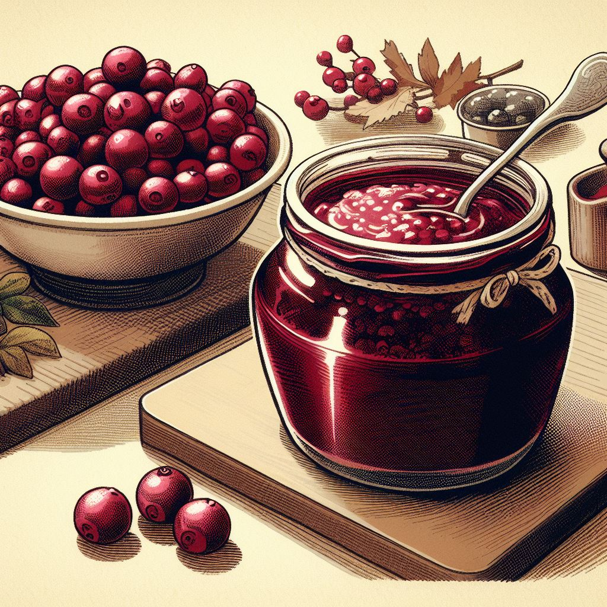

Cranberry sauce is a delightful burst of flavor, adding a zesty twist to any meal. Its vibrant red hue and tangy sweetness bring a lively contrast to savory dishes. Each spoonful is like a celebration on your palate, where the tartness of the cranberries playfully mingles with the gentle sweetness. It's not just a condiment; it's an experience that elevates ordinary meals into festive feasts. Whether gracing your Thanksgiving table or brightening up a weekday dinner, cranberry sauce is a versatile gem. It's a crowd-pleaser that appeals to both the young and the young at heart, a timeless treasure that transcends seasons and trends. In the world of culinary delights, cranberry sauce stands out as a uniquely joyful and invigorating treat!
This sauce can be made several days in advance and kept in the fridge, making it a great make-ahead option for holiday meals!
Back